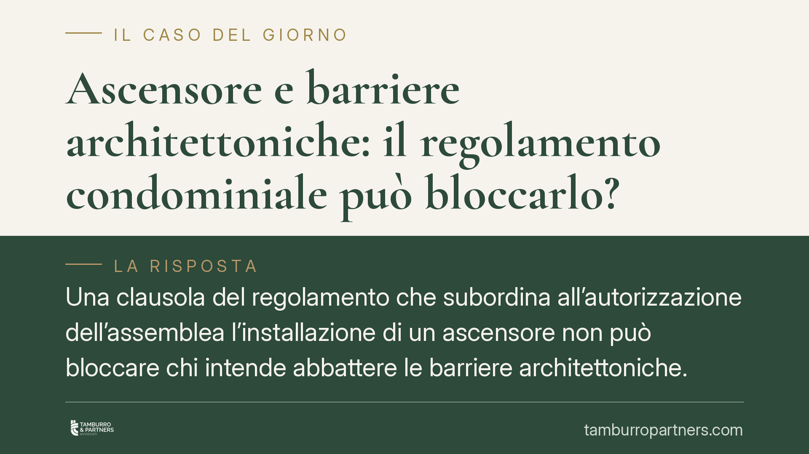

Ascensore e barriere architettoniche: il regolamento condominiale può bloccarlo?
Una clausola del regolamento che subordina all'autorizzazione dell'assemblea l'installazione di un ascensore non può bloccare chi intende abbattere le barriere architettoniche. La giurisprudenza è consolidata: le finalità di tutela della persona disabile prevalgono, nei limiti dell'uso solidale del bene comune. Vediamo cosa cambia per condomini e amministratori.

Il caso tipico
Un condomino con difficoltà motorie chiede di installare un ascensore, o di estenderlo ai piani scoperti, per accedere autonomamente alla propria abitazione. Il regolamento condominiale, però, prevede che ogni intervento di questo tipo sia subordinato all'autorizzazione dell'assemblea. L'opposizione di altri condomini basta a fermare l'opera?
La risposta della giurisprudenza è negativa, salvo precisi limiti tecnici. Una clausola regolamentare di questo tenore è recessiva, cioè cede il passo, rispetto alle finalità di interesse generale perseguite dalla normativa sull'eliminazione delle barriere architettoniche.
Inquadramento normativo
Il riferimento centrale è la Legge 9 gennaio 1989, n. 13, in materia di superamento delle barriere architettoniche negli edifici privati. L'art. 2 di questa legge consente al singolo condomino — o a chi ne ha diritto — di eseguire a proprie spese le opere necessarie all'abbattimento delle barriere, anche quando l'assemblea non deliberi o neghi l'autorizzazione. L'iniziativa individuale è quindi distinta e autonoma rispetto alla delibera assembleare prevista dall'art. 1120 c.c. per le innovazioni finanziate dal condominio.
La ratio di questa disciplina ha radici costituzionali. La tutela della persona con disabilità si collega agli artt. 2, 3 e 32 della Costituzione: solidarietà sociale, uguaglianza sostanziale e diritto alla salute. Per questo motivo una clausola regolamentare di natura privatistica non può comprimere diritti che l'ordinamento riconosce come prevalenti.
Resta fermo il limite generale dell'art. 1102 c.c., che disciplina l'uso della cosa comune da parte del singolo condomino. L'intervento è legittimo purché non alteri la destinazione del bene e non impedisca agli altri condomini di farne pari uso. Questo limite va letto, secondo l'orientamento consolidato, in chiave di solidarietà condominiale: non ogni fastidio o riduzione di comodità giustifica l'opposizione, ma solo un pregiudizio concreto e apprezzabile (ad esempio la compromissione della staticità dell'edificio o l'inagibilità di parti comuni essenziali).
Implicazioni pratiche
Per il condomino con difficoltà motorie il messaggio è chiaro: l'opera può essere realizzata anche senza il via libera dell'assemblea, sostenendone i costi, se il condominio non intende contribuire. L'autorizzazione assembleare non è un presupposto di validità dell'intervento ex art. 2 L. 13/1989.
Per l'assemblea e gli altri condomini, il potere di opposizione non è pieno. Non è sufficiente invocare il regolamento: occorre dimostrare che l'opera viola il limite dell'art. 1102 c.c., ossia che lede concretamente il decoro, la sicurezza o l'uso comune del bene.
Il riparto delle spese
Se l'ascensore è realizzato dal condominio come innovazione deliberata ai sensi dell'art. 1120 c.c., le spese seguono di norma i millesimi. Diverso è il caso dell'art. 1121 c.c., che riguarda le innovazioni gravose o voluttuarie: i condomini che non intendono trarne vantaggio sono esonerati dal contributo, mentre chi vi ha interesse può eseguirle a proprie spese.
Lo stesso art. 1121 c.c. prevede però una facoltà di partecipazione successiva. Il condomino che inizialmente non ha concorso alla spesa può, in qualsiasi momento, decidere di usufruire dell'innovazione: in tal caso dovrà contribuire pro quota alle spese di esecuzione e manutenzione, nei limiti e alle condizioni fissate dalla norma. Questo meccanismo è frequente proprio negli impianti come l'ascensore, la cui utilità può maturare nel tempo.
Cosa fare in concreto
- Verificate il titolo di legittimazione: se agite ai sensi dell'art. 2 L. 13/1989, l'intervento è individuale e a vostre spese, indipendentemente dalla delibera.
- Documentate la condizione di disabilità o la finalità di abbattimento barriere, perché è il presupposto che rende recessiva la clausola regolamentare.
- Fate valutare il progetto da un tecnico per accertare il rispetto dell'art. 1102 c.c.: staticità, sicurezza e salvaguardia dell'uso comune.
- Convocate comunque l'assemblea se puntate al contributo condominiale ex artt. 1120-1121 c.c.: anche in caso di diniego, l'iniziativa individuale resta praticabile.
- Consigliamo di formalizzare per iscritto la comunicazione all'amministratore e di conservare preventivi e relazioni tecniche, utili in un eventuale contenzioso.
> Avvertenza: prima di agire, verificate sempre lo specifico orientamento giurisprudenziale applicabile al vostro caso nelle banche dati ufficiali (CED Cassazione), poiché le pronunce vanno lette alla luce delle circostanze concrete.
---
Contributo informativo a cura di Tamburro & Partners Avvocati - Avv. Giuseppe Tamburro. Non costituisce parere legale.
Ogni condominio ha una storia a sé.
Se gestisci un'amministrazione e vuoi un confronto su una specifica questione condominiale, scrivi allo studio. Ti rispondiamo entro un giorno lavorativo.